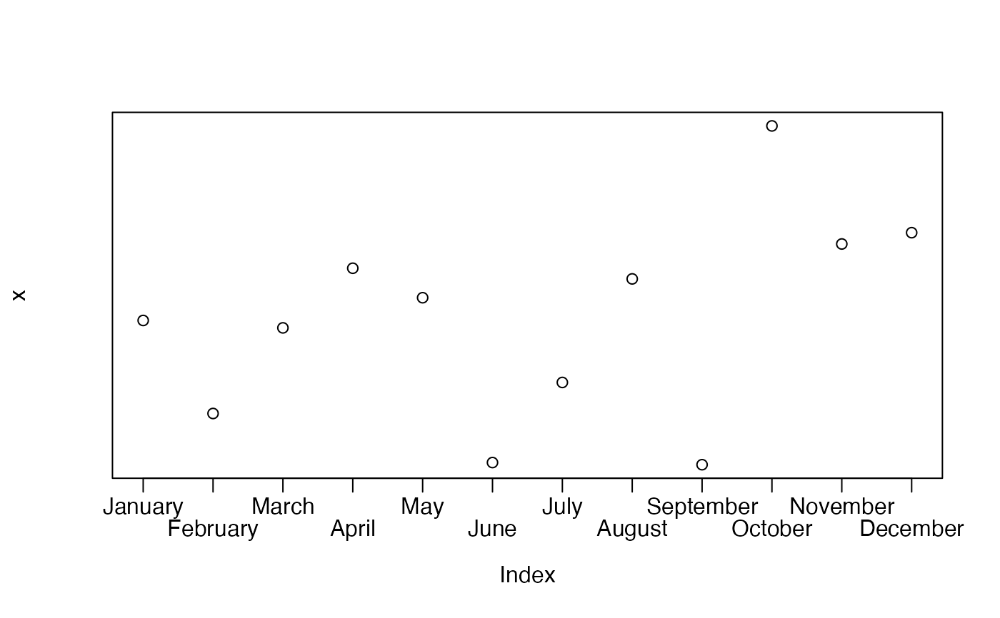
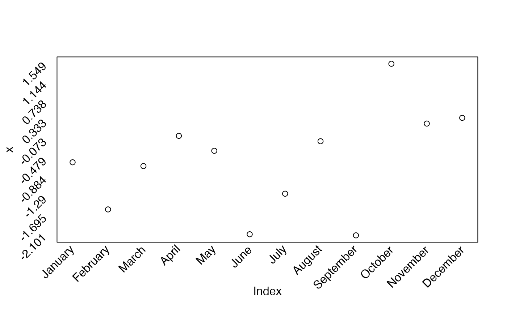

Place staggered or angled labels on an axis
staxlab.RdPlaces labels on an axis in a regular staggered order or at an angle
Usage
staxlab(side=1,at,labels,nlines=2,top.line=0.5,line.spacing=0.8,
srt=NULL,ticklen=0.03,adj=1,...)Arguments
- side
axis on which to place the labels, as in axis
- at
where to place the labels in user units, as in axis
- labels
text strings
- nlines
How many lines to use to stagger the labels.
- top.line
Distance from the axis to place the first line of text.
- line.spacing
Spacing between lines of text labels.
- srt
Text rotation.
- ticklen
Proportion of plot height in user units to place text below the plot.
- adj
horizontal adjustment of the labels.
- ...
Additional arguments to be passed to mtext or text.
Note
This function is mainly useful when either long axis labels or a large number of labels are to be placed without overlapping. It staggers the labels along the axis specified. The user may wish to increase the space beneath the plot using mar before calling staxlab. It is probably only useful on the bottom or left side of the plot.
If srt is not NULL, the labels will be rotated srt degrees and placed below the plot. This method will only place labels at the bottom. Note that this option only works on the lower and left axes.
Examples
x<-rnorm(12)
plot(x,axes=FALSE)
box()
months<-c("January","February","March","April","May","June",
"July","August","September","October","November","December")
staxlab(1,1:12,months)

plot(x,axes=FALSE)
box()
staxlab(1,1:12,months,srt=45)
ylabels<-round(seq(min(x),max(x),length.out=10),3)
staxlab(2,ylabels,ylabels,srt=45)
